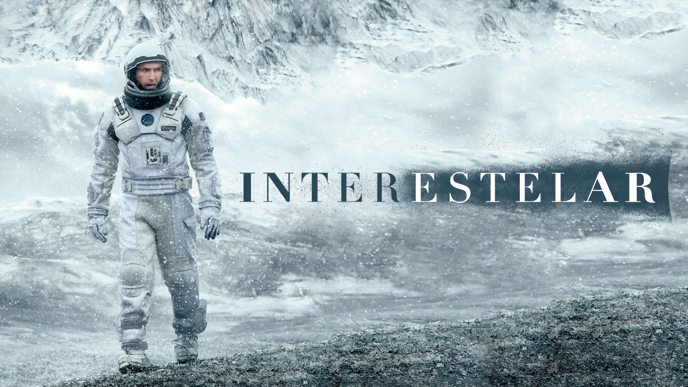

Cena 1
Crítica Escolha do Editor
Interestelar: A Obra-Prima Científica de Nolan
Interestelar não é apenas um filme sobre viagens espaciais; é uma narrativa profunda sobre a conexão humana, o tempo e o amor de um pai por sua filha que transcende dimensões físicas.
Usando teorias físicas reais do cientista Kip Thorne sobre buracos negros e dilatação temporal, o filme entrega uma das experiências visuais mais realistas da história do cinema moderno.
"O amor é a única coisa que somos capazes de perceber que transcende as dimensões do tempo e do espaço."